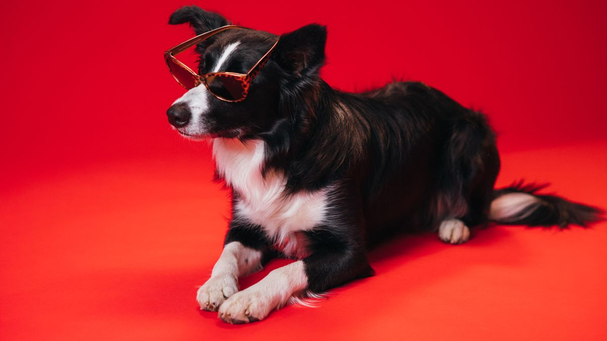

왜 단계적으로 시작할까
갑자기 칫솔 2분을 넣으면 80% 가까이 거부합니다. 1일차 입술 3초 터치 → 3일차 입술 닦기 → 7일차 앞니 10초 브러싱 순서가 현실적입니다.

치과 스케일링은 2~3년마다 15~40만 원이 듭니다. 매일 30초 관리로 방문 간격을 늘리는 게 목표이지, 치료를 대체하지는 않습니다.
단계 예시
- 1~3일: 손가락·가제로 입술·앞니 5초
- 4~7일: 펫 전용 칫솔 소개(치약 없이 10초)
- 8~14일: 펫 치약(닭맛 등) 소량+20초
- 15일~: 주 3회 30초, 점차 1분까지
한 단계에서 3일 이상 거부하면 이전 단계로 돌아갑니다.
보조 방법
덴탈 간식·치약은 보조입니다. 하루 권장 칼로리의 10% 이내로 간식·덴탈 제품을 합산하세요. 5kg 견 기준 주식 200g이면 간식+덴탈 합 20g 이하가 안전한 출발점입니다.
집에서 보는 이상 신호
입 냄새가 2주 전보다 확 달라짐, 잇몸 출혈이 3일 연속, 식사 거부 48시간—이때는 생활 팁을 멈추고 구강 검진을 받아 보세요.

실전 적용 노트
구강 관리는 매일 1분 완벽 브러싱보다, 주 3회 20초가 현실적인 목표인 집이 많습니다. 0회보다 1회가 낫고, 거부하면 7일간 발치 1개 2초 터치부터 시작하세요.

사람 치약은 사용하지 않습니다. 펫 전용 또는 물·가우즈 닦기부터 시험하고, 잇몸 붉음·입냄새가 2주 지속되면 검진을 검토하세요.
덴탈 간식·껌은 칫솔질을 대체하지 않습니다. 간식 칼로리 10% 상한 안에서 보조로만 사용하세요.
어린이·노견은 턱 힘과 협조도가 다릅니다. 억지로 5분 잡기보다 3초 접촉+간식 1개 반복이 스트레스가 적습니다.
구강 사진을 월 1회 같은 각도로 찍어 두면, 변화 비교가 쉬워집니다.
이번 주 목표는 20초×2회입니다. 완벽함보다 반복 가능성을 우선하세요.
칫솔질은 식사 1시간 후가 이상적입니다. 급여 직후는 거부 반응이 강할 수 있어, 저녁 산책 후 10분 타임에 묶는 집이 많습니다.
입 안을 열 때는 턱 아래를 한 손으로 받치고, 갑자기 얼굴을 잡지 않습니다. 첫 5일은 입술 바깥만 터치해도 진전입니다.
치석이 눈에 보이기 시작하면 집에서 제거하려 하지 말고, 스케일링 시기를 수의사와 상의하세요.
이번 주 구강 관리 체크리스트입니다. 매일이 아니어도 괜찮습니다.
- 주 2회 이상 20초 이하 구강 케어를 시도했습니다.
- 사람 치약을 쓰지 않고 펫 전용·가우즈·물 닦기만 사용했습니다.
- 입냄새·잇몸 붉음을 주 1회 이상 확인했습니다.
- 거부 시 발치 1개 2초 터치 훈련을 진행했습니다.
- 덴탈 간식·껌은 하루 칼로리 10% 안에서만 줬습니다.
- 구강 사진을 같은 각도로 1장 이상 보관했습니다.
- 급여 직후가 아닌 산책·휴식 후 시간에 시도했습니다.
- 치석을 집에서 제거하려 하지 않았습니다.
구강 관리의 목표는 하얀 치아가 아니라, 매주 반복 가능한 20초 습관입니다.
구강 관리는 하루 1분 완벽함보다, 주 3회 20초 반복이 현실적입니다. 거부하면 발치 터치부터, 칫솔은 나중에 도입해도 늦지 않습니다. 덴탈 간식은 칫솔질을 대체하지 않으니 칼로리 상한 안에서만 쓰고, 입냄새·잇몸 변화가 2주 지속되면 사진과 함께 검진을 검토하세요. 이번 달 성공 기준은 '20초×2회'면 충분합니다.
이번 주는 체크리스트에서 '주 2회 20초 시도' 하나만 골라 반복해 보세요. 나머지는 다음 주로 미뤄도 괜찮습니다.
마무리로, 이번 주에는 체크리스트 3개만 골라 2주 반복해 보세요. 작은 성공이 쌓이면 나머지는 자연스럽게 늘어납니다.
기록이 쌓이면 병원·상담 때 설명이 쉬워집니다. 한 줄 메모라도 같은 항목으로 이어 쓰는 것이 핵심입니다.
완벽한 루틴보다 80% 지켜지는 루틴이 오래 갑니다. 안 된 날은 원인 한 줄만 적고 다음 주에 조정하세요.
오늘 당장 하나만 고른다면, 체크리스트 맨 위 항목부터 시작해 보세요. 나머지는 다음 주로 미뤄도 괜찮습니다.
가족이 함께 돌본다면, 누가 했는지 체크박스 한 칸만 추가해도 누락·중복이 줄어듭니다.
검색으로 답을 찾기 전에 7일 메모를 먼저 정리해 보세요. 증상 설명이 훨씬 빨라지는 경우가 많습니다.
새 용품·새 사료·새 루틴은 동시에 바꾸지 않습니다. 한 가지만 바꾸고 5일 관찰하는 편이 안전합니다.
이번 달 목표는 '매일 완벽'이 아니라 '이번 주 3회 성공'입니다. 0회에서 1회로 바뀌는 것만으로도 충분한 진전입니다.
스트레스 신호(회피·짖음·숨 가쁨)가 보이면 시간을 반으로 줄이세요. 짧게 자주 성공하는 쪽이 학습에 유리합니다.
계절·이사·손님처럼 환경이 바뀌는 주에는 루틴을 단순화하세요. 필수 3개만 지키고 나머지는 다음 주로 미뤄도 됩니다.
사진 한 장이 긴 설명보다 나을 때가 있습니다. 같은 조명·각도로 남기면 변화 비교가 쉬워집니다.
정리하며
매일 1분 브러싱 영상과 달리, 현실은 주 3회 20초인 집이 대부분입니다.
저는 구강 글을 쓸 때 '완벽한 1분'보다 '이번 주 2회 성공'을 기준으로 삼으라고 말합니다. 0회보다 1회가 낫습니다.
칫솔질 20초만 성공해도 됩니다. 0초보다 20초가 낫습니다.
초보자가 자주 실수하는 포인트
- 첫날부터 2분 억지로 닦기
- 사람용 치약 사용
- 덴탈 간식만으로 관리 종료
- 출혈 나도 압력 그대로 유지
- 단계 없이 칫솔부터 도입
체크리스트
- 입술 터치 3일 훈련
- 펫 전용 칫솔·치약 준비
- 주 3회 30초 루틴 설정
- 간식 칼로리 10% 이내 계산
- 입 냄새·출혈 3일 관찰
자주 묻는 질문
- 치약 없이 칫솔만 써도 되나요?
- 7일차까지는 칫솔만으로 시작해도 됩니다. 제품 라벨을 확인하고 거부가 크면 단계를 더 쪼개세요.
이 글은 초보자 기준으로 이해하기 쉽게 정리되었으며, 내용은 운영 과정에서 순차적으로 보완될 수 있습니다. 수의사 등 전문가의 진단·처치를 대체하지 않습니다.